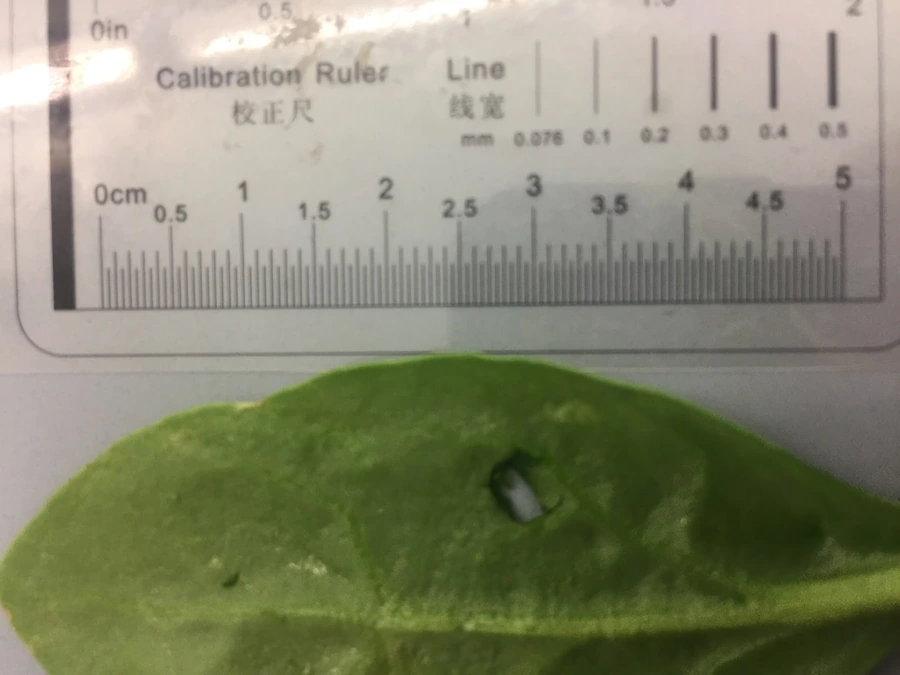

农作物与经济植物 · 植物界
菠菜 Spinacia oleracea

菠菜的叶片柔嫩、富含铁和叶酸，可炒食、做汤和凉拌，是四季常见的绿叶蔬菜，耐寒性较强。
- 分类
- 门被子植物门纲双子叶植物纲目石竹目科藜科属菠菜属
- 栖息环境
- 冷凉湿润的菜地，耐寒性较强，适合春秋栽培
- 地理分布
- 原产波斯，现世界各地广泛栽培
- 保护级别
- 暂无评估（栽培作物）
物种志
菠菜是藜科一年生或二年生草本，株高 0.2–0.5 m。根为直根系，红色。叶片互生，戟形或卵形，肉质柔嫩，深绿色；茎直立，中空。花单性，雌雄异株或同株，花小、黄绿色，簇生于叶腋，风媒传粉。种子有刺或无刺，成熟时坚硬。
菠菜原产波斯（今伊朗一带），故名“菠菜”，唐代经尼泊尔传入中国，如今是常见的绿叶蔬菜。它喜冷凉、光照充足，耐寒性较强，适宜在疏松肥沃、保水力强的土壤中种植，春秋两季栽培为主。菠菜富含铁、叶酸、维生素 C 和膳食纤维，可炒食、做汤、凉拌、做馅。菠菜含草酸较多，焯水后可减少草酸，更利于钙的吸收，肾结石患者应适量食用。
形态与习性
- 株高0.2–0.5 m
- 叶戟形或卵形，柔嫩深绿
- 花单性，黄绿色，风媒传粉
- 栽培春秋两季为主
- 营养富含铁、叶酸与维生素 C
趣味知识
- 菠菜原产波斯，唐代经尼泊尔传入中国，名字由此而来。
- 菠菜含草酸较多，焯水后能减少草酸，更利于钙吸收。
- 菠菜雌雄异株或同株，花小、黄绿色，靠风传粉。